Tierra Dorada
Comunicación ambiental construida junto a líderes juveniles en territorios mineros.
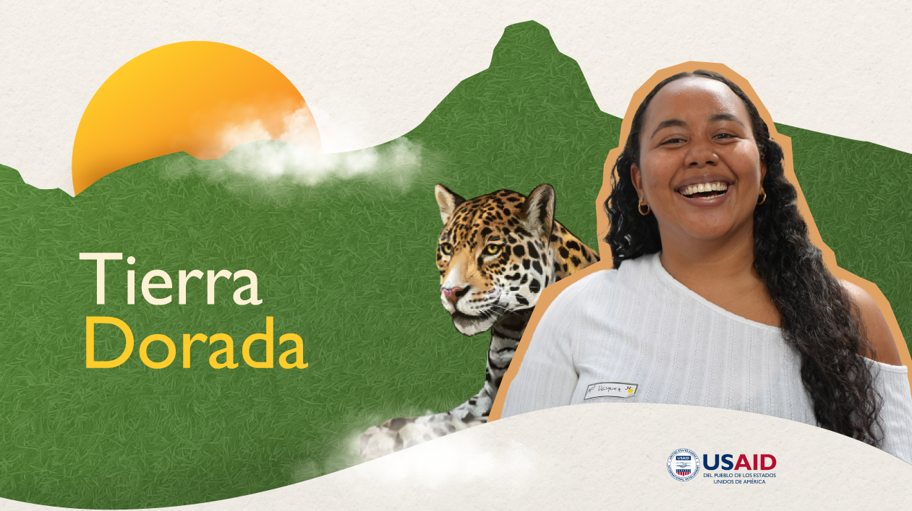
Introducción
Herramientas de comunicación y pedagogía para liderazgos comunitarios
Tierra Dorada fue una alianza entre Chemonics, Arteaga Latam y CORCRESER orientada a reducir el impacto ambiental de prácticas mineras informales en la Serranía de San Lucas, el Bajo Cauca antioqueño y la subregión del San Juan en el Chocó. Me integré al proyecto cuando la identidad visual ya estaba avanzada, sumándome al equipo de comunicaciones. Mi labor se centró en diseñar y estructurar talleres formativos, brindando herramientas conceptuales y creativas a líderes locales para que fueran ellos mismos quienes comunicaran los retos ambientales en sus municipios.
Contexto
Territorios complejos y lenguajes locales diversos
La intervención se desarrolló en zonas rurales alejadas, marcadas por la informalidad minera y dinámicas complejas de seguridad. El trabajo se realizó directamente con jóvenes líderes, artistas, músicos y colectivos culturales locales. Debido a la marcada diversidad cultural entre comunidades, los talleres no admitían un formato rígido y exigían adaptarse a los lenguajes, ritmos y formas de expresión de cada municipio.
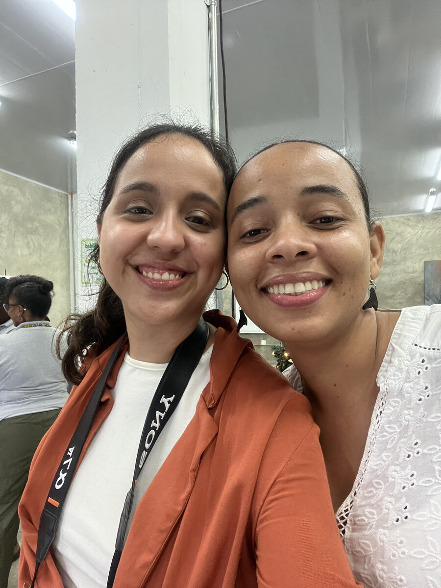
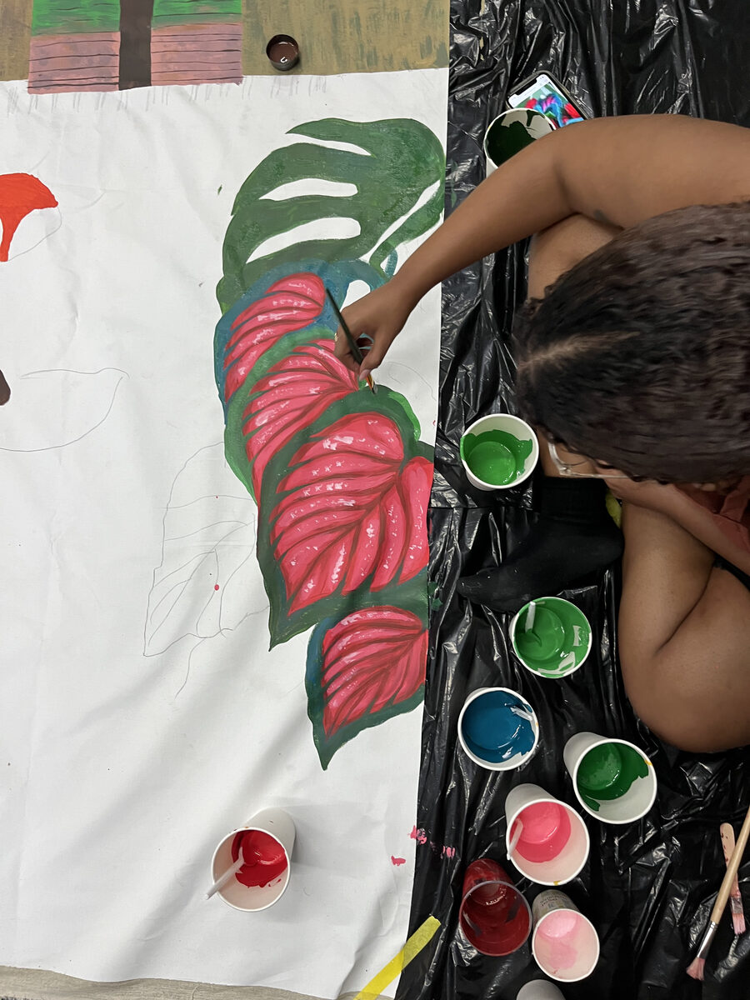
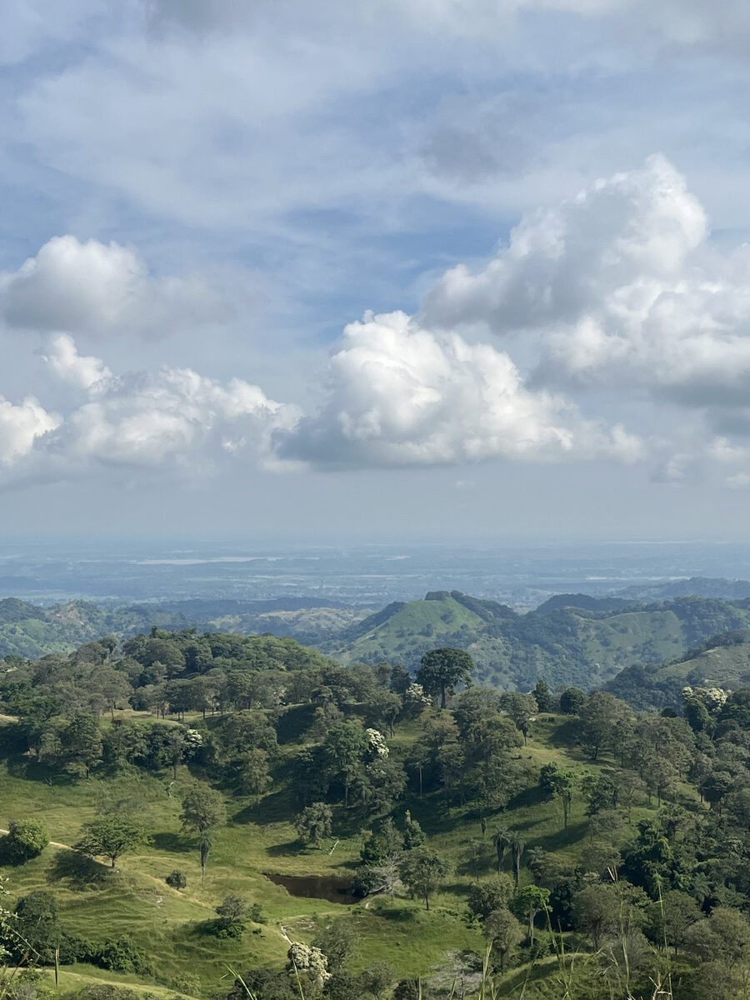
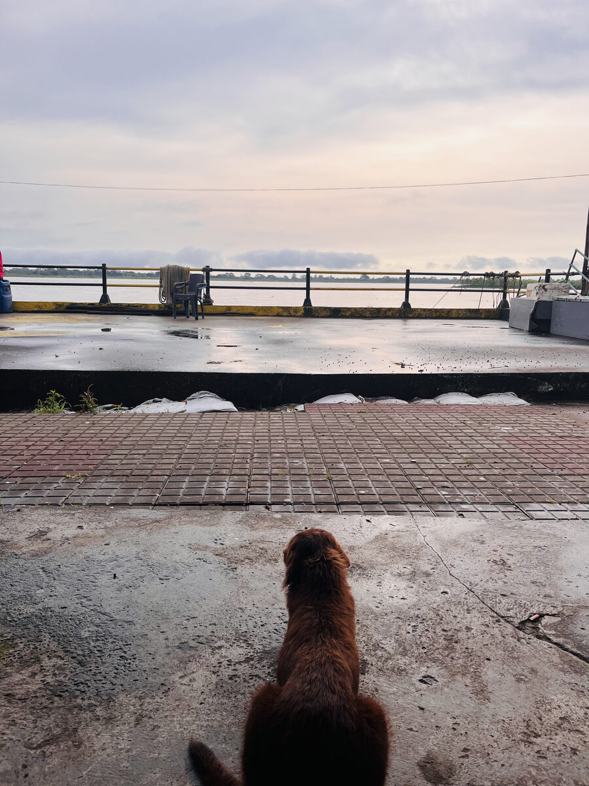
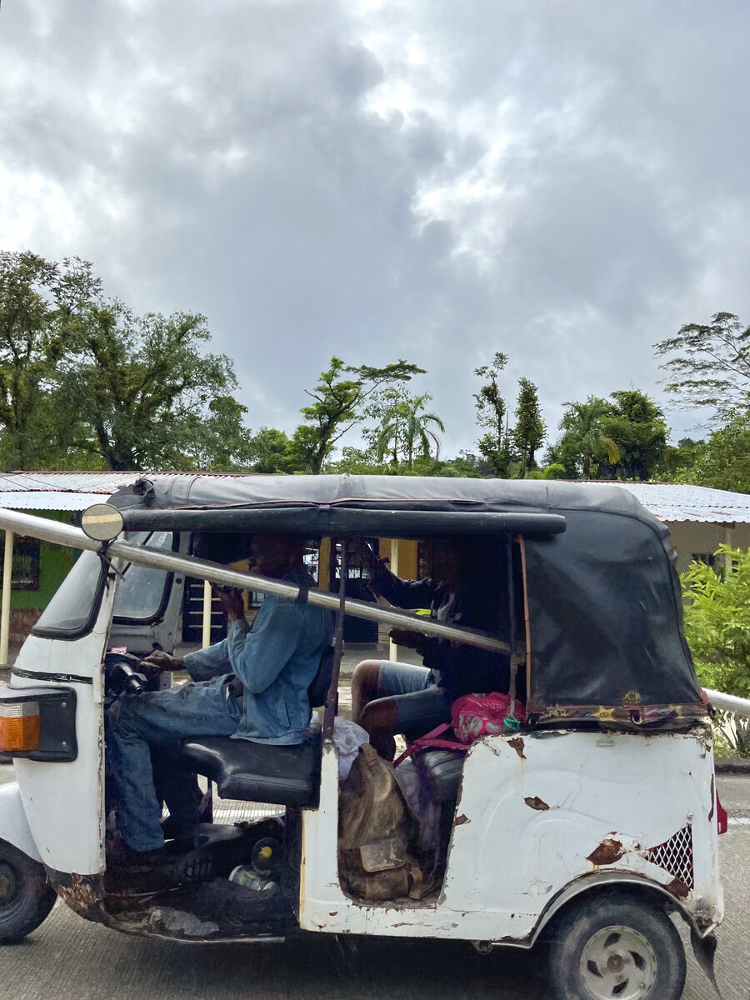
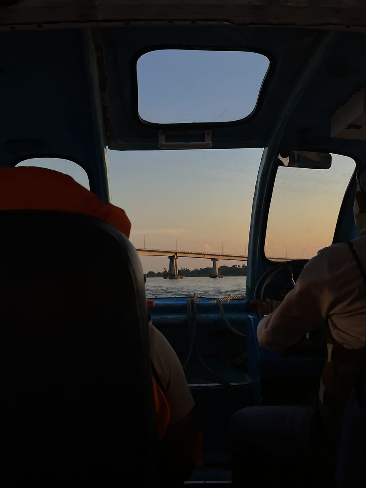
Investigación
Inmersión en territorio y escucha directa con líderes juveniles
La investigación se basó en el trabajo de campo cara a cara con colectivos artísticos y liderazgos juveniles en los municipios de incidencia. A través de entrevistas, observación y dinámicas de escucha activa, mapeamos sus formas cotidianas de expresión y sus canales comunitarios habituales antes de definir la metodología pedagógica de cada taller.
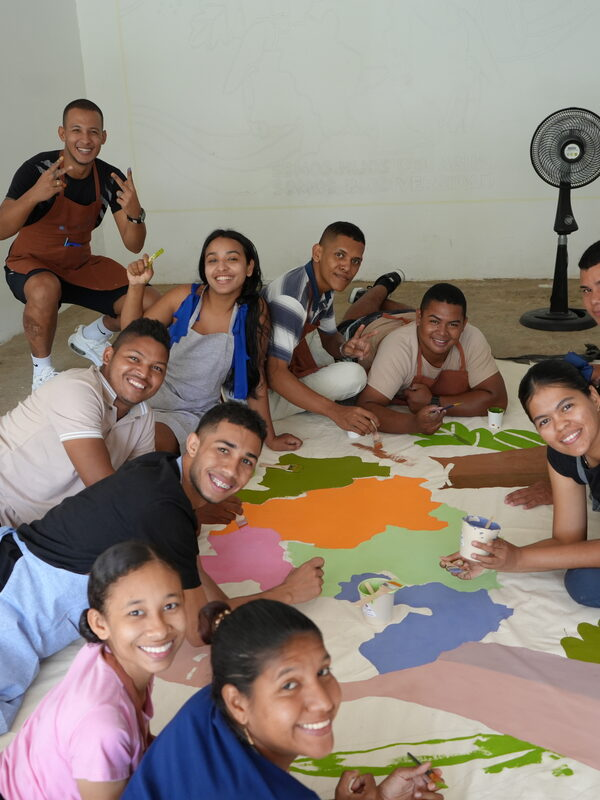
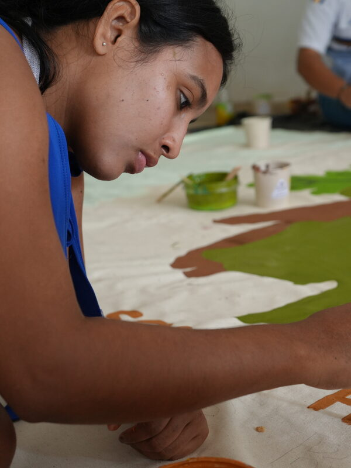
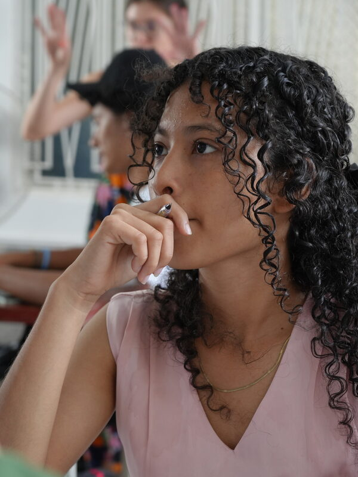
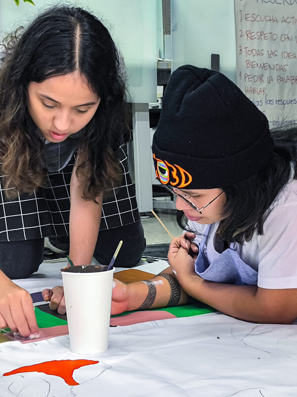
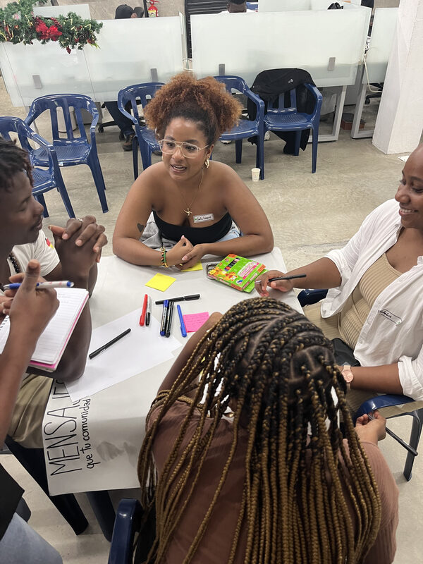
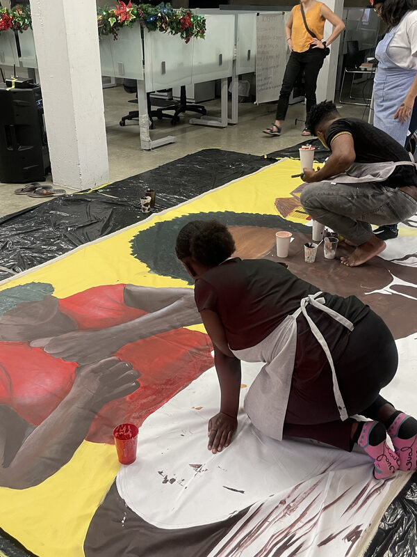
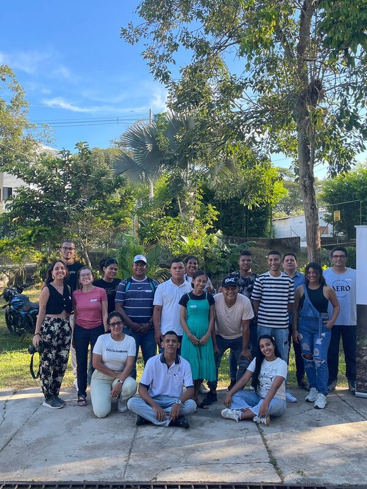
Decisiones
Facilitar herramientas para la comunidad en lugar de imponer piezas corporativas
La decisión central no fue visual, sino estratégica — definir el rol del diseñador en territorio. En lugar de producir piezas terminadas desde un escritorio, el trabajo consistió en capacitar y brindar herramientas conceptuales y creativas a los líderes juveniles para que fueran ellos quienes comunicaran sus aprendizajes ambientales. Actué como puente entre los lineamientos del consorcio y las realidades locales, asumiendo un rol de facilitadora pedagógica más que de autora final, priorizando la apropiación comunitaria sobre el control estricto de la gráfica.
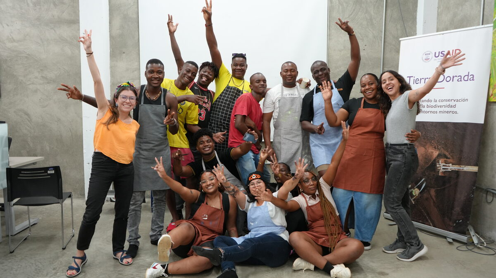
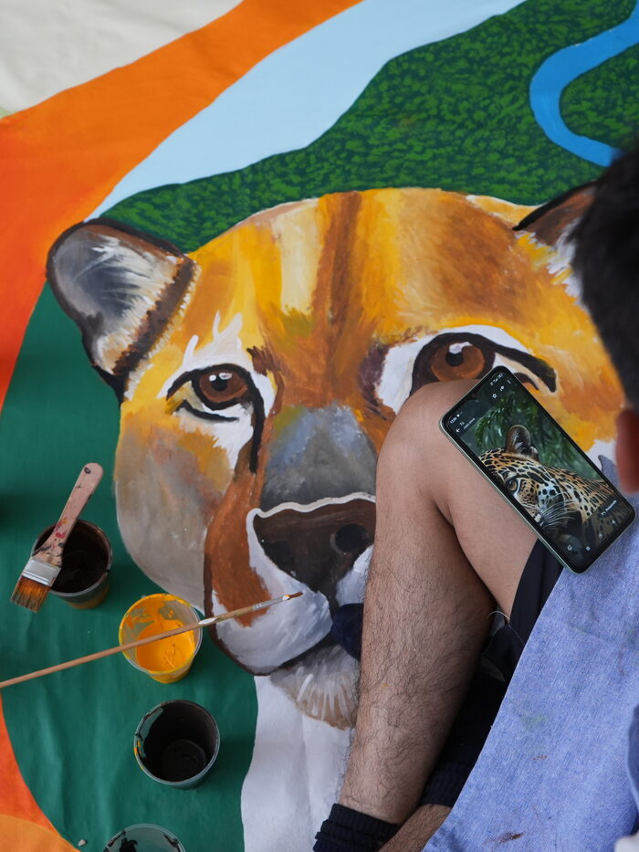
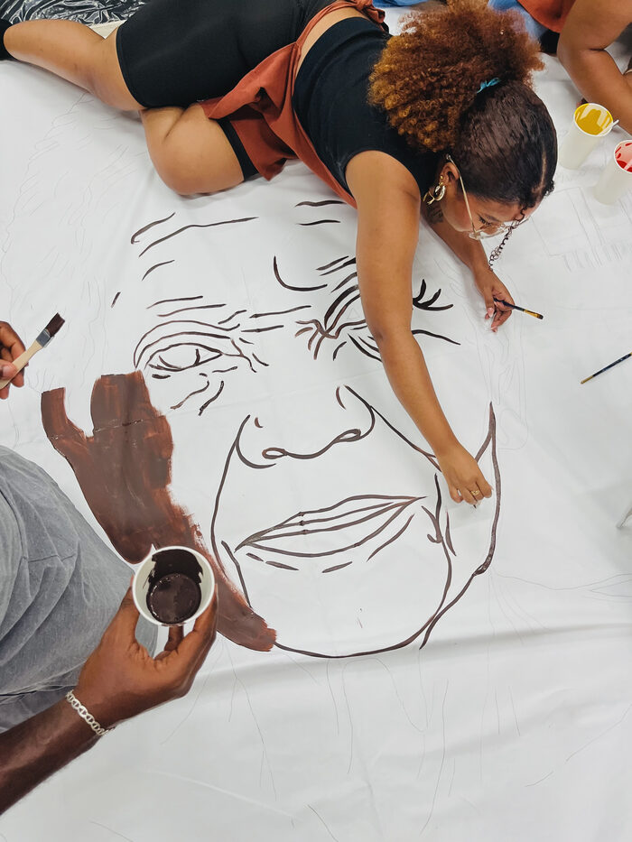
Resultado
Campañas ambientales cocreadas y lideradas por la juventud local
Como fruto de los talleres se cocrearon murales, canciones, poemas y piezas audiovisuales orientadas al cuidado del agua, el suelo y el aire en enclaves mineros. Los jóvenes líderes no actuaron como simples asistentes, sino que asumieron un rol activo como voceros y productores de contenido en sus municipios. La estrategia aseguró que las comunidades construyeran sus propios mensajes de mitigación ambiental utilizando sus expresiones culturales habituales y garantizando legitimidad local.
Reflexiones
Diseñar con propósito al servicio de las realidades humanas del territorio
De mi paso por Arteaga Latam, lo que más valoro es haber trabajado directamente con las comunidades. Para mí como diseñadora, el proceso creativo cobra verdadero sentido cuando trasciende la pantalla y se pone al servicio de organizaciones con impacto social y ambiental. Trabajar con estos jóvenes fue profundamente confrontante — escuchar sus historias de liderazgo en contextos donde ejercerlo puede costar la vida me conmovió y me enseñó sobre determinación. A pesar de la hostilidad de su entorno, siempre hubo alegría, inspiración y un compromiso absoluto con sus mensajes. Volví a casa con la certeza de que mi oficio no pertenece únicamente al espacio digital, sino a los lugares donde el diseño puede respaldar la voz de quienes transforman su territorio.